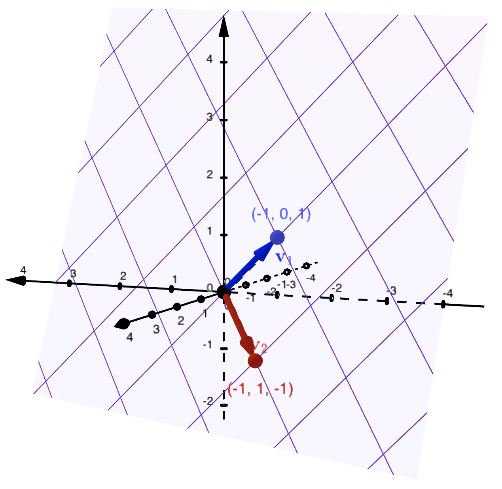

Lesson 5.2 Containment in a Span
Recall that the span of a set of vectors
\(S\subset \mathbb{R}^m\) is the set
\(\spn(S)\) of all linear combinations that can be made from vectors in
\(S\) (
Definition 2.4.3). It is a core linear algebraic goal to understand containment in a span — to understand whether a given vector, a collection of vectors, or another span, lies within
\(\spn(S)\text{.}\) In so doing, we will be able to determine when
\(\spn(S)=\mathbb{R}^m\) itself. In this lesson, we use the tools of
\(\rref\) to concretely answer these questions of containment.
Example 5.2.1. Is a given vector contained in a given plane?
Consider the collection
\(S = \{\vect{v}_1,\vect{v}_2\}\subset \mathbb{R}^3\) where:
\(\vect{v}_1=\begin{bmatrix}-1\\0\\1 \end{bmatrix}\) and \(\vect{v}_2=\begin{bmatrix}-1\\1\\-1\end{bmatrix}\text{.}\) Geometrically, the span of \(S\) is the plane containing the three noncollinear points: \((0,0,0)\text{,}\) \((-1,0,1)\) and \((-1,1,-1)\text{.}\) The plane can be written in parametric form:
\begin{equation*}
\spn(S) = \left\{ s\begin{bmatrix}-1\\0\\1 \end{bmatrix} + t\begin{bmatrix}-1\\1\\-1\end{bmatrix} \ \bigg| \ s,t, \in \mathbb{R}\right \}.
\end{equation*}

Observe that
\(\vect{b}\) is in
\(\spn(S)\text{.}\)
Consider the vector \(\vect{b} = \begin{bmatrix}-3\\1\\1\end{bmatrix}\) and observe that:
\begin{equation*}
\left[\begin{array}{cc|c}-1\amp-1\amp3\\0\amp1\amp1\\1\amp-1\amp1 \end{array}\right] \sim \left[\begin{array}{cc|c}1\amp0\amp2\\0\amp1\amp1\\0\amp0\amp0 \end{array}\right].
\end{equation*}
Since \(\begin{bmatrix}2\\1\end{bmatrix}\) is a solution to \(\begin{bmatrix}-1\amp-1\\0\amp1\\1\amp-1 \end{bmatrix}\vect{x}=\begin{bmatrix}-3\\1\\1\end{bmatrix}\text{,}\) we conclude that \(\vect{b}\) lies in \(\spn(S)\text{.}\)
Play with span in
\(\mathbb{R}^2\) at GeoGebra ID:
zzupb6tg.
Play with span in
\(\mathbb{R}^3\) at GeoGebra ID:
tr9g6hym.
If
\(S=\{\vect{v}_1,\vect{v}_2, \ldots, \vect{v}_n\}\subset \mathbb{R}^m\) is a collection of vectors and
\(\vect{b}\in \mathbb{R}^m\text{,}\) then
\(\vect{b}\) is contained in the span of
\(S\) if
\(\vect{b}\) is a linear combination of the vectors in
\(S\text{,}\) and hence if
there exists a solution to the matrix equation
\(A_S\vect{x}=\vect{b}\text{.}\) Leveraging
Insight 4.4.6, we have the following characterizations of being in the span.
We now understand how to quickly computationally check if a given vector lies in a span. We can do this for several vectors at once. Consider \(T=\{\vect{w}_1,\ldots, \vect{w}_r\}\) and suppose we want to know if \(T\subset \spn(S)\text{.}\) This means we want to check that, for each \(i\in \{1,\ldots, r\}\text{,}\) the matrix equation \(A_S\vect{x}=\vect{w}_i\) has a solution. Computationally, this is equivalent to checking that, for each \(i\in \{1,\ldots, r\}\text{,}\) \(\rref([A_S \mid \vect{w}_i])\) does not have a zero-one row. Since the computation of \(\rref(A_S)\) is the same every time, we can group these all together and compute:
\begin{equation*}
\rref([A_S \mid \underbrace{\vect{w}_1 \mid \cdots \mid \vect{w}_r}_{B_T}]).
\end{equation*}
This motivates a new extended notation of an augmented matrix of two matrices
\([A_S \mid B_T]\text{.}\) The equals bar here lies in between the two matrices. A zero-one row in this context means a row of zeros to the left of the equals bar and a one at some point to the right of the equals bar.
Using Dependency Analysis (
Insight 5.1.3), we analyze each column after the equals bar of
\(\rref([A_S \mid B_T])\text{.}\) If we do not see a zero-one row, then each column of
\(\rref([A_S \mid B_T])\) to the right of the equals bar gives the servings vectors for making the corresponding vector of
\(T\) from the pivot columns of
\(A_S\text{.}\) Conversely, if we see a zero-one row, then we know that vector of
\(T\) corresponding to the column of that one is a vector outside of the span of
\(S\text{,}\) and hence
\(T\not\subset \spn(S)\text{.}\)
Recall that span is a subspace, it is a set that contains its linear combinations (
Proposition 2.4.8). This fact can be restated as saying that, if
\(S\subset \mathbb{R}^m\) and
\(T\subset \spn(S)\text{,}\) then
\(\spn(T)\subset \spn(S)\text{.}\) Putting this all together, we have the following useful computational tool for span containment.
Proposition 5.2.3. Computational Quick Check for Containment in \(\spn(S)\).
If
\(S=\{\vect{v}_1,\ldots, \vect{v}_n\}\subset \mathbb{R}^m\) and
\(T=\{\vect{w}_1,\ldots, \vect{w}_r\}\subset \mathbb{R}^m\text{,}\) then
\(\spn(T) \subset \spn(S)\) (i.e.,
\(\operatorname{Col}(B_T)\subset \operatorname{Col}(A_S)\)) if and only if
\(\rref([A_S \mid B_T])\) has no zero-one rows.
Example 5.2.4. Is a given plane contained in another given plane?
Consider the planes \(\rho_1 = \spn(\vect{a},\vect{b})\) and \(\rho_2 = \spn(\vect{c},\vect{d})\) where:
\begin{equation*}
\vect{a}=\begin{bmatrix}-1\\1\\-1\end{bmatrix}, \quad
\vect{b}=\begin{bmatrix}1\\2\\3\end{bmatrix}, \quad
\vect{c}=\begin{bmatrix}3\\0\\5\end{bmatrix}, \quad \text{and} \quad
\vect{d}=\begin{bmatrix}5\\1\\9\end{bmatrix}.
\end{equation*}
I can plot the planes, using say GeoGebra, and verify that these are in fact equal planes. However, I can now do this entirely algebraically using Span Containment (
Proposition 5.2.3). Checking:
\begin{equation*}
\rref\left(
\left[\begin{array}{cc|cc}-1\amp1\amp3\amp5\\1\amp2\amp0\amp1\\-1\amp3\amp5\amp9\end{array}\right]
\right)
=
\left[\begin{array}{cc|cc}1\amp0\amp-2\amp-3\\0\amp1\amp1\amp2\\0\amp0\amp0\amp0\end{array}\right]
\end{equation*}
I deduce that \(\rho_2\subset \rho_1\text{.}\) Similarly checking:
\begin{equation*}
\rref\left(
\left[\begin{array}{cc|cc}3\amp5\amp-1\amp1\\0\amp1\amp1\amp2\\5\amp9\amp-1\amp3\end{array}\right]
\right)
=
\left[\begin{array}{cc|cc}1\amp0\amp-2\amp-3\\0\amp1\amp1\amp2\\0\amp0\amp0\amp0\end{array}\right]
\end{equation*}
I deduce that \(\rho_1\subset \rho_2\text{,}\) and hence \(\rho_1= \rho_2\text{.}\)
Take a moment to consider how powerful this kind of tool is. While it is powerful to leverage visualizations of lines and planes in our minds, it is not practical or even possible to explicitly plot all the spans we encounter. Nevertheless, we can still algebraically analyze and compare them.
How can we determine when two sets are equal? A common strategy is to show “double containment,” that is to say, to show
\(X=Y\text{,}\) we show
\(X\subset Y\) and
\(Y\subset X\text{.}\) If the vectors of
\(S\) started out already in
\(\spn(T)\text{,}\) then our containment analysis allows us to determine when
\(\spn(S)=\spn(T)\text{,}\) i.e., when
\(S\) spans
\(\spn(T)\) (
Definition 2.6.6).
Only in special circumstances does
\(\spn(S)=\mathbb{R}^m\text{.}\) There is one “standard” collection of vectors that we can quickly see does span
\(\mathbb{R}^m\text{.}\)
Example 5.2.6. The “Standard” Spanning Vectors.
If \(\vect{x}\in \mathbb{R}^m\text{,}\) then:
\begin{equation*}
\vect{x} = \begin{bmatrix}x_1\\x_2\\\vdots\\ x_m\end{bmatrix}
=
x_1 \begin{bmatrix}1\\0\\\vdots\\ 0\end{bmatrix} +
x_2 \begin{bmatrix}0\\1\\\vdots\\ 0\end{bmatrix} +
\cdots +
x_m \begin{bmatrix}0\\0\\\vdots\\ 1\end{bmatrix}
\end{equation*}
Let \(\vect{e}_i\) be the list-length \(m\) vector with 1 in spot \(i\) and zeros elsewhere. Then \(\vect{x}=x_1\vect{e}_1+x_2\vect{e}_2+\cdots+ x_m\vect{e}_m\text{.}\) So if \(T = \{\vect{e}_1,\vect{e}_2,\ldots, \vect{e}_m\}\text{,}\) then \(\spn(T)=\mathbb{R}^m\text{.}\) Furthermore observe that in this case, \(B_T=I_m\text{,}\) the \(m\times m\) identity matrix. Hence, we have also shown \(\operatorname{Col}(I_m)=\mathbb{R}^m\text{.}\)
Using Comparing Spans (
Proposition 5.2.3) together with
Example 5.2.6, we get that
\(S\) spans
\(\mathbb{R}^m\) if and only if
\(\rref([A_S \mid I_m])\) has no zero-one rows. This is a direct computational strategy for establishing spanning
\(\mathbb{R}^m\text{.}\)
I claim now this can be detected by simply looking at the last row of
\(\rref(A_S)\text{,}\) more precisely whether or not it has a leading 1, or is a zero row. If
\(\rref(A_S)\) has a leading 1 in the last row, it has a leading 1 in every row, and hence
Insight 4.4.6 implies
\(A_S\vect{x}=\vect{b}\) always has a solution. On the other hand, if
\(\rref(A_S)\) has a zero row, then consider the vector
\(\vect{e}_m=\begin{bmatrix}0\\ \vdots \\ 0\\1 \end{bmatrix}\text{,}\) the vector in
\(\mathbb{R}^m\) that is all zeros except a 1 in the last row. Reversing the row operations used to get
\(\rref(A_S)\text{,}\) the augmented matrix
\([\rref(A_S) \mid \vect{e}_m] \sim [A_S \mid \vect{b}_0]\) for some
\(\vect{b}_0\text{.}\) By construction,
Insight 4.4.6 implies
\(A_S\vect{x}=\vect{b}_0\) has no solution. (To justify this last part, I used the fact that row operations are
reversible, a fact that we will look at in much greater detail in
Chapter 6.)
Proposition 5.2.7. Computational Quick Check For Spanning \(\mathbb{R}^m\).
If
\(S=\{\vect{v}_1,\ldots \vect{v}_n\}\subset \mathbb{R}^m\text{,}\) then
\(S\) spans
\(\mathbb{R}^m\) if and only if
\(\rref(A_S)\) has a leading 1 in every row.
Activity 5.2.9. Comparison of Number of Vectors to List-Length.
Let
\(S\subset \mathbb{R}^m\) be a collection of
\(n\) vectors. Use
Proposition 5.2.7 to justify the statement:
If
\(m>n\) (i.e., there are more rows than columns in
\(A_S\)), then
\(S\) cannot span \(\mathbb{R}^m\text{.}\)
Since a statement and its contrapositive are logically equivalent, you have also shown:
If
\(S\) spans
\(\mathbb{R}^m\text{,}\) then
\(m\le n\text{.}\)
Note that if
\(m\le n\text{,}\) \(S\) may or may not span
\(\mathbb{R}^m\text{,}\) you need to check!
You will have many opportunities to practice this analysis on the OPS.
Activity 5.2.11.
Consider \(S = \{\vect{v}_1,\vect{v}_2,\vect{v}_3\}\subset \mathbb{R}^3\) where:
\begin{equation*}
\vect{v}_1=\begin{bmatrix}1\\5\\6\end{bmatrix},\qquad
\vect{v}_2=\begin{bmatrix}2\\3\\1\end{bmatrix},\qquad
\vect{v}_3=\begin{bmatrix}-4\\1\\9\end{bmatrix}
\end{equation*}
-
Before performing any computations, do you expect these to span all of
\(\mathbb{R}^3\text{?}\)
-
To conclude this lesson, understanding the concept of spanning is a fundamental linear algebraic goal. Translating spanning into matrix equations, we leveraged the computational tools of Gaussian elimination and
\(\rref\) to explicitly analyze Span Containment (
Proposition 5.2.3). Once again, I hope you are now seeing that, while
\(\rref\) is a straightforward computation, it is how you interpret it
in context that really matters.